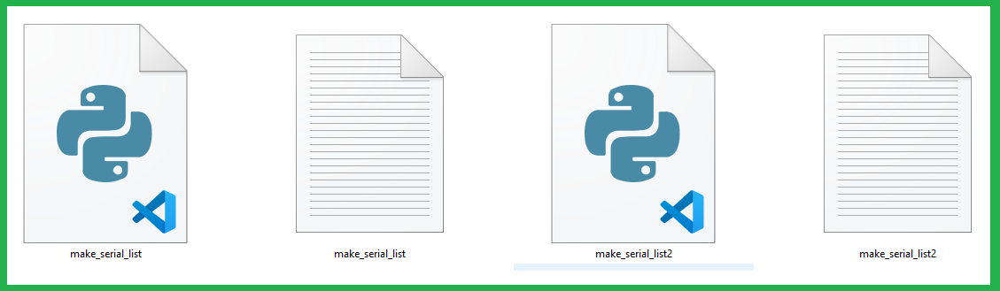
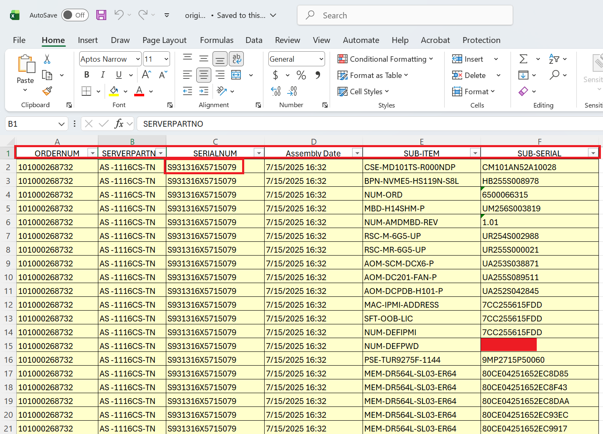
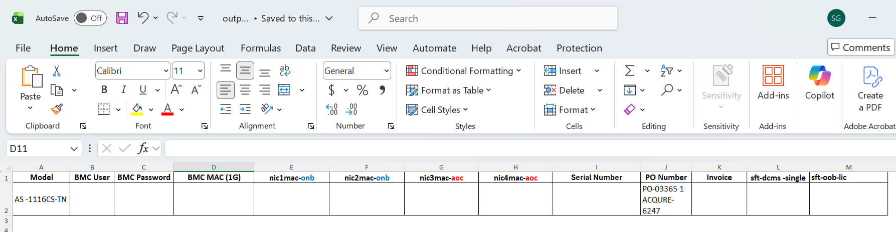
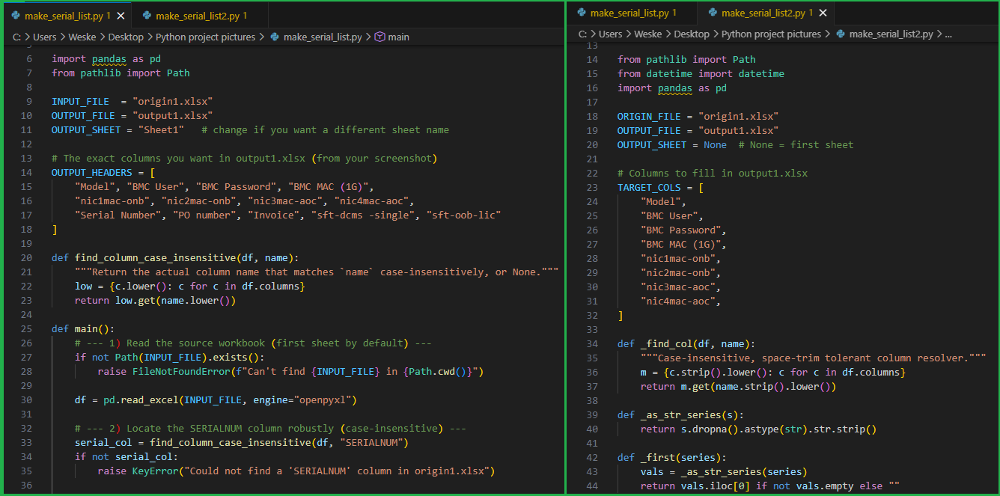
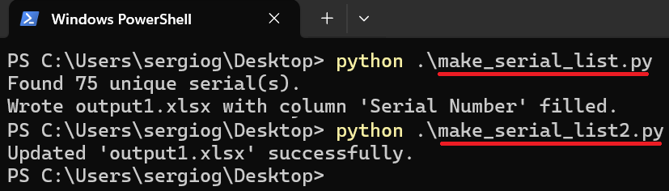
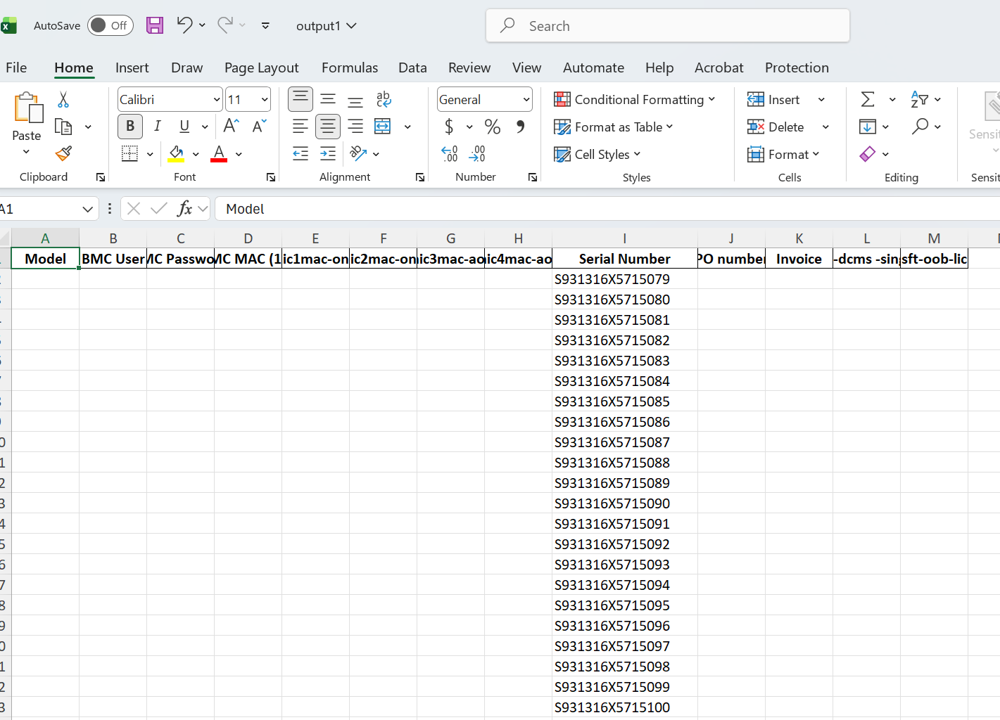
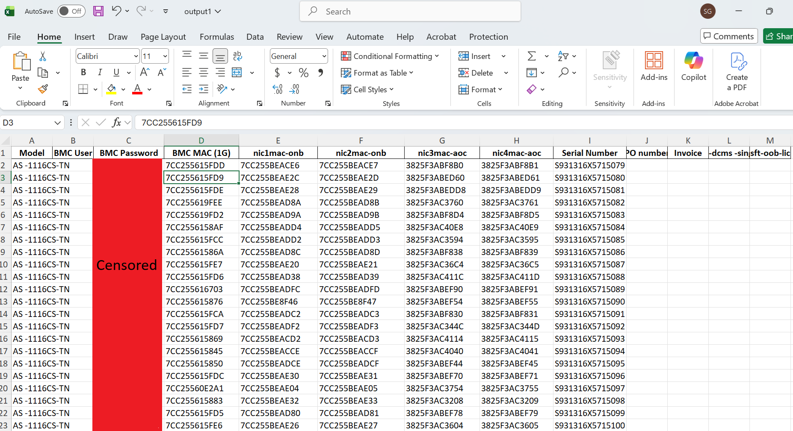

Supermicro Server Inventory Extraction Pipeline
The above video shows and entire run of this project. The repository with the two python scripts can be found here: https://github.com/sergiogutierrez2/metadataSupermicroServers_python
Files required for this project:

Summary of the project:
Together, the two python scripts (make_serial_list.py and make_serial_lis2.py), form a simple data-processing pipeline: the first script reads the detailed origin1.xlsx file (which contains many repeated rows per server) and extracts a clean list of unique serial numbers, generating a structured template output1.xlsx with only the “Serial Number” column filled; the second script then takes that template, looks up each serial number back in origin1.xlsx, pulls relevant information such as model, BMC user/password, and various MAC addresses based on specific sub-item rules, and fills in the remaining columns—resulting in a final, organized spreadsheet with one complete row per server.
Here's how origin1.xlsx looks like:

Here's how output1.xlsx looks like before running the scripts:

Here's a short view of the make_serial_list.py and make_serial_list2.py:

Here's a workflow of what these Python scripts do and how they interact with the two spreadsheets:
1- Start with origin1.xlsx, which contains repeated rows per server serial because each row represents a different sub-item or component.
2- Run the first script to read origin1.xlsx and locate the SERIALNUM column.
3- The first script cleans that serial column, removes blanks, and extracts unique serial numbers while keeping their original order.
4- The first script creates output1.xlsx with the final header layout, but fills only the Serial Number column.
5- Run the second script, which opens both origin1.xlsx and the newly created output1.xlsx.
6- For each serial number already listed in output1.xlsx, the second script finds all matching rows in origin1.xlsx.
7- It pulls the model, BMC info, and MAC-related values by checking specific source columns such as SERVERPARTNO, SUB-ITEM, and SUB-SERIAL.
8- It maps those extracted values into the correct target columns in output1.xlsx, such as Model, BMC Password, BMC MAC (1G), and the NIC MAC fields.
9- The second script writes the completed results back into output1.xlsx, or into a timestamped copy if the file is open and locked.
10- Final result: output1.xlsx becomes a clean, one-row-per-server sheet populated from the detailed source workbook.
Running the scripts:

Output1.xlsx after running the first script, make_serial_list.py:

Output1.xlsx after running the second script, make_serial_list2.py:

These two scripts are useful for Supermicro servers because they automate the transformation of raw manufacturing or diagnostic data into a clean, usable inventory format.
In Supermicro workflows, tools like BOM exports, factory logs, or field diagnostics often produce messy, repetitive data (multiple rows per server with different sub-components). The first script solves this by extracting a unique list of servers (serial numbers), while the second script enriches each server with critical operational data like model, BMC credentials, and MAC addresses. This is extremely valuable because engineers and operations teams need a one-row-per-server view for tasks like provisioning, PXE boot setup, network configuration, asset tracking, RMA analysis, and large-scale deployments.